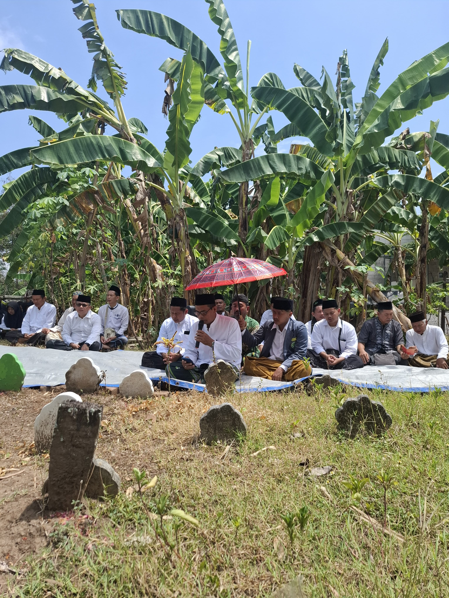
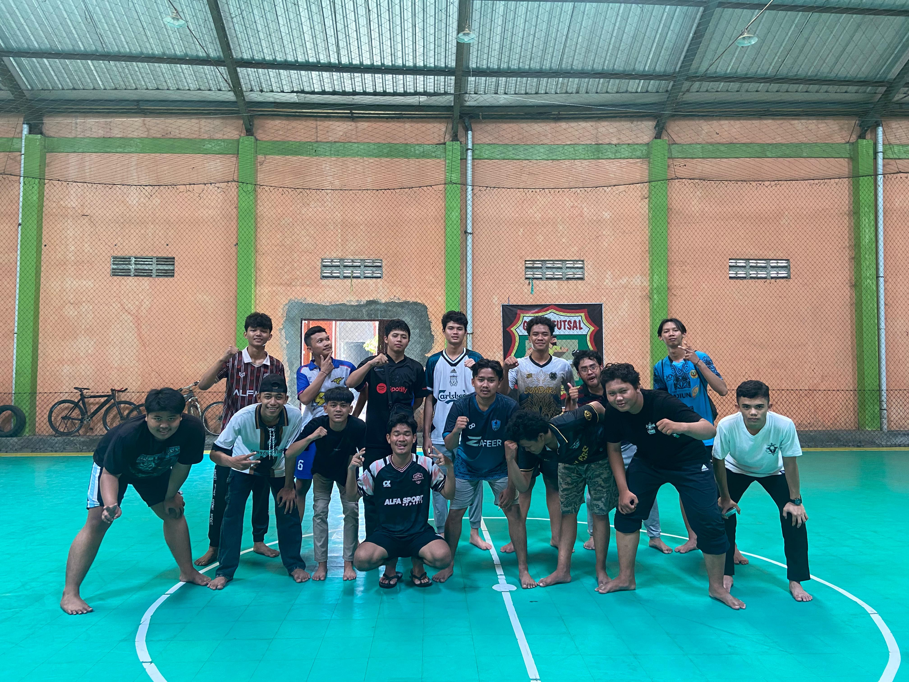

Dokumentasi Kegiatan

PC. IPNU-IPPNU Kota Madiun Bersama PBNU

Menyambung Sanad Berorganisasi

Menjaga Kebugaran Tubuh
IPNU (Ikatan Pelajar Nahdlatul Ulama) dan IPPNU (Ikatan Pelajar Putri Nahdlatul Ulama) Kota Madiun adalah organisasi pelajar yang berada di bawah naungan Nahdlatul Ulama. Kami hadir untuk memberikan ruang bagi generasi muda dalam mengembangkan diri, baik dalam bidang intelektual, sosial, maupun spiritual.
Dengan moto "Pioneer Generations; Change The Future" IPNU dan IPPNU Kota Madiun berkomitmen untuk menjadi pelopor perubahan positif di kalangan pelajar. Kami mengajak para pelajar, khususnya di Kota Madiun, untuk ikut serta dalam kegiatan yang tidak hanya memperkaya pengetahuan, tetapi juga menumbuhkan rasa cinta tanah air dan ukhuwah Islamiyah.
IPNU dan IPPNU Kota Madiun bukan sekadar organisasi, tetapi juga keluarga besar yang saling mendukung dan memberi inspirasi. Bergabung bersama kami berarti ikut berkontribusi dalam membangun bangsa, mengasah kemampuan diri, dan memperluas jaringan pertemanan yang positif.
"Bersama IPNU dan IPPNU, kita bisa menjadi bagian dari perubahan yang lebih baik!"
Jadi, tunggu apa lagi? Ayo bergabung dan jadilah bagian dari generasi muda yang penuh semangat dan harapan untuk masa depan yang lebih cerah!
Tongkat estafet kepemimpinan Pengurus Wilayah IPNU Jawa Timur telah diteruskan oleh pemimpin yang baru, dibalik itu banyak cerita yang di alami oleh delegasi PC.IPNU Kota Madiun
Baca SelengkapnyaTulungagung – Pimpinan Wilayah Ikatan Pelajar Putri Nahdlatul Ulama (PW IPPNU) Jawa Timur sukses menyelenggarakan Rapat Kerja Wilayah (RAKERWIL) tahun 2024 di Kabupaten Tulungagung. Acara ini dihadiri oleh perwakilan Pimpinan Cabang IPPNU se-Jawa Timur
Baca Selengkapnya
PC. IPNU-IPPNU Kota Madiun Bersama PBNU
Menyambung Sanad Berorganisasi
Menjaga Kebugaran Tubuh
Email kami di contact Gmail
Hubungi Kami di Sekretaris IPPNU Sekretaris IPNUFollow kami di:
Ayo bergabung dengan kami dan jadilah bagian dari perubahan positif! Isi formulir pendaftaran di bawah ini: